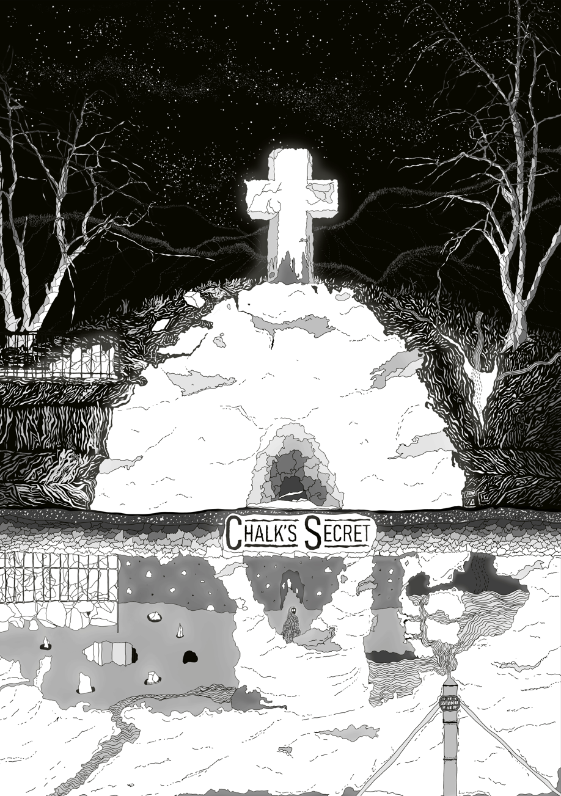
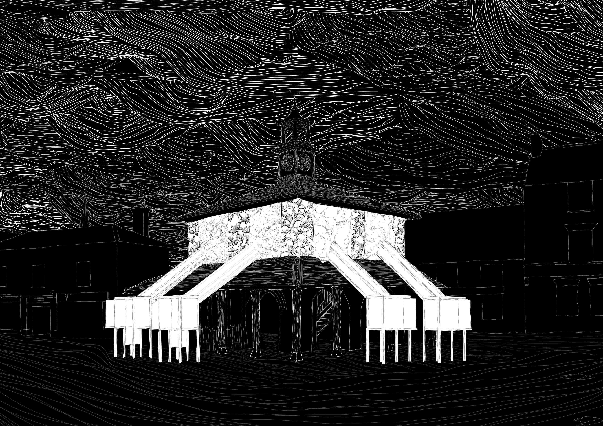
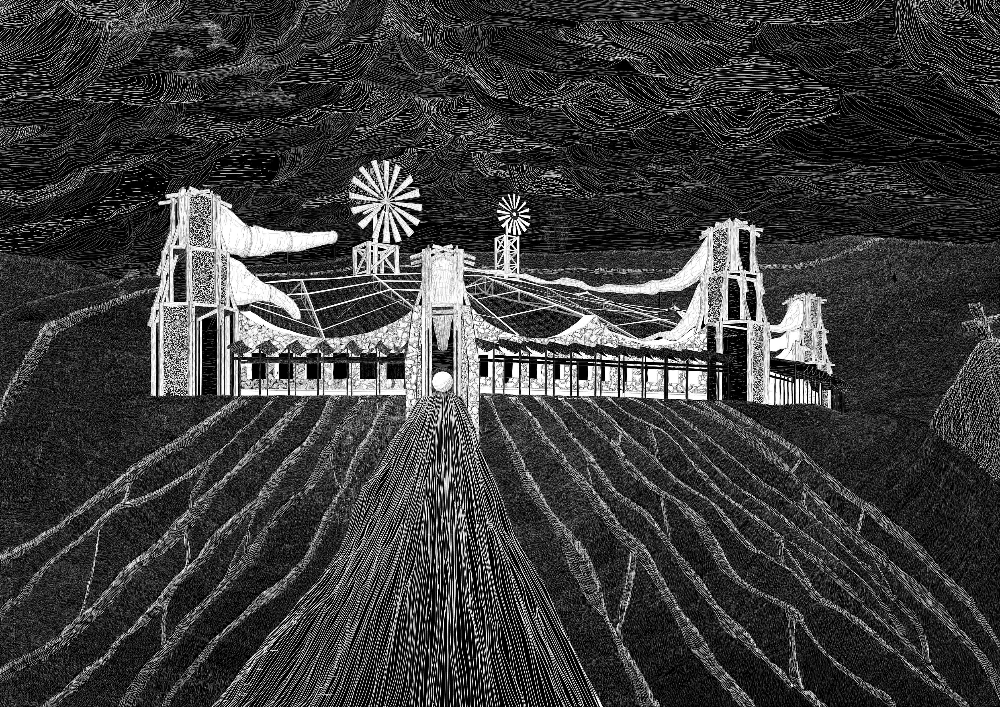
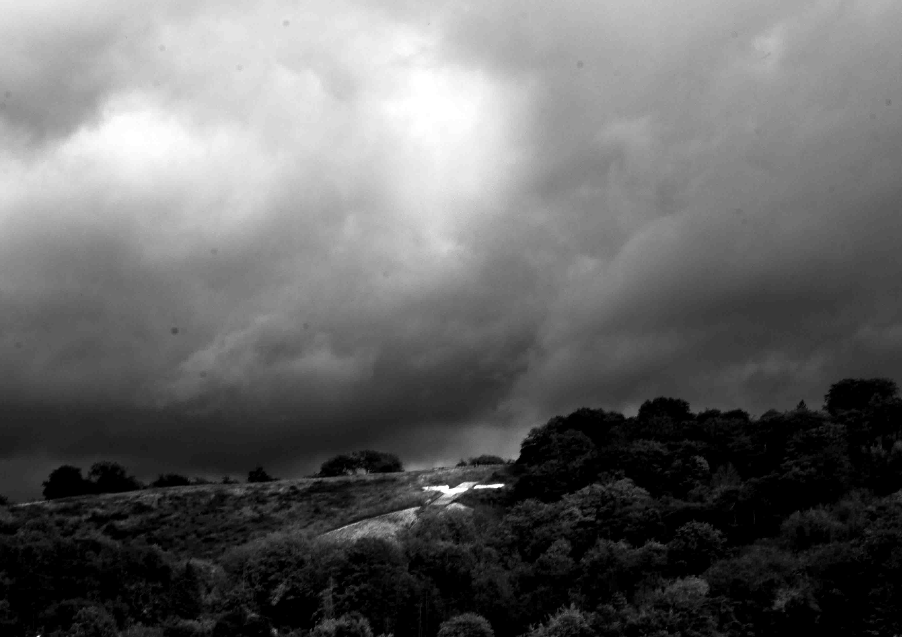
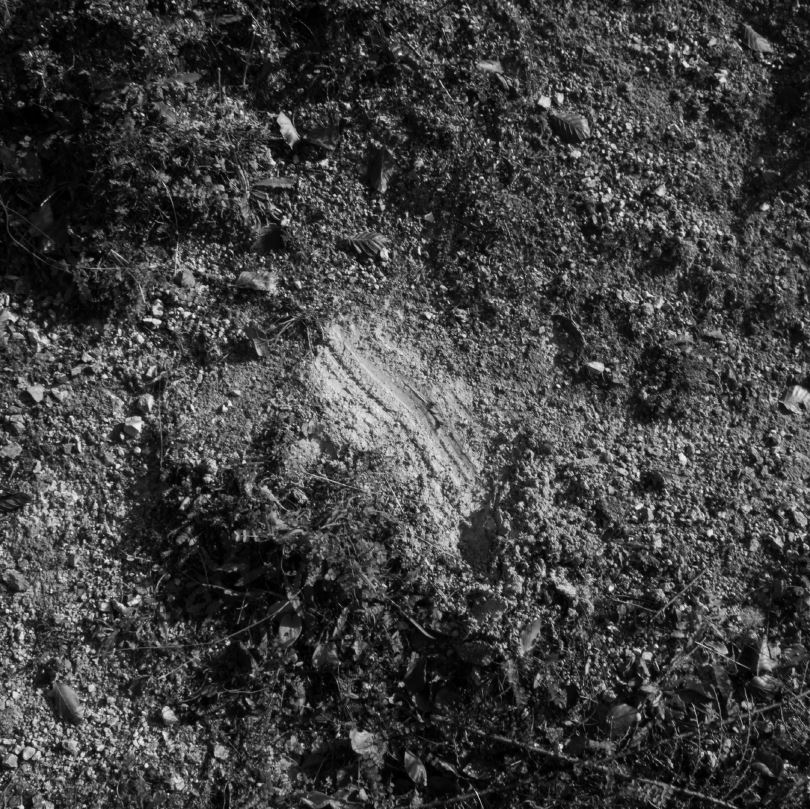
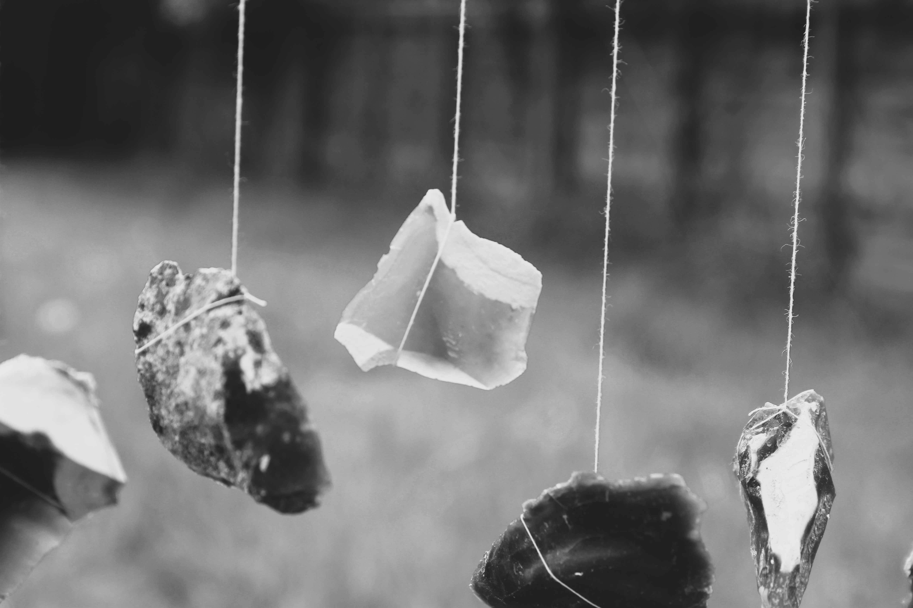

04_Our White Cross
The project seeks to challenge the past and current rituals of Princes Risborough, and proposes a new future of myth making within the small rural town. So far the myth of Princes Risborough closely intertwines with the story of chalk, upon which it rests. Upon a nearby hillside is engraved a white cross., The top layer of chalk scraped away to ritually maintain the canonized hillside for another year. Landscape as language. Droveways and ridgeways traverse the chalk swathe across England. These idiosyncratic white chalk veins engraved into the hillsides and valleys are the collaboration of generations. They are silent myth lines. All of which are of origin unknown. The communal creation of myth. Our White Cross creates spaces for parley between people and place to generate a cyclical mode of myth making, in collaboration with the local lithosphere. The spaces centre upon the performance of dreams, intrinsically engrained with the local integrated systems of water, soil, rock, atmosphere, and memory. The process begins at the individual dreamings at places of power. The chamber allows the transition from the quotidian into an unfiltered encounter between imagination and memory, encouraging the dreamer to act their dream as they wish – to talk, to sing, to hum, to breathe. These aural individual performances are transferred to the group performance chamber within the retrofitted market hall upon the High street. Multiple individual performances are played within the chalkcrete cavern simultaneously, generating multiple layers of myth. A group of performers now acts to the layered myth aurally and now, physically. Pairs of onlookers catch glimpses of the interpretation and begin to formalize the performance to be conducted at the Chalk Seminary next to the white cross. It is here at the Chalk Seminary the communal performance of dreams take place. Both within an external chalk gabioned building and inside the chalk hillside itself, where carved chambers lay in wait of performance and for 3 distinct light experiences. Ultimately, Chalk is this place and is the foundation of living and making here. The current rituals of this small rural town are blind to the local integrated systems it is embedded within. Cyclical ritual making provides the opportunity for community to challenge these rituals and create an enlivened and unpredictable future integrated with, Our White Cross.

The Artist explanation






